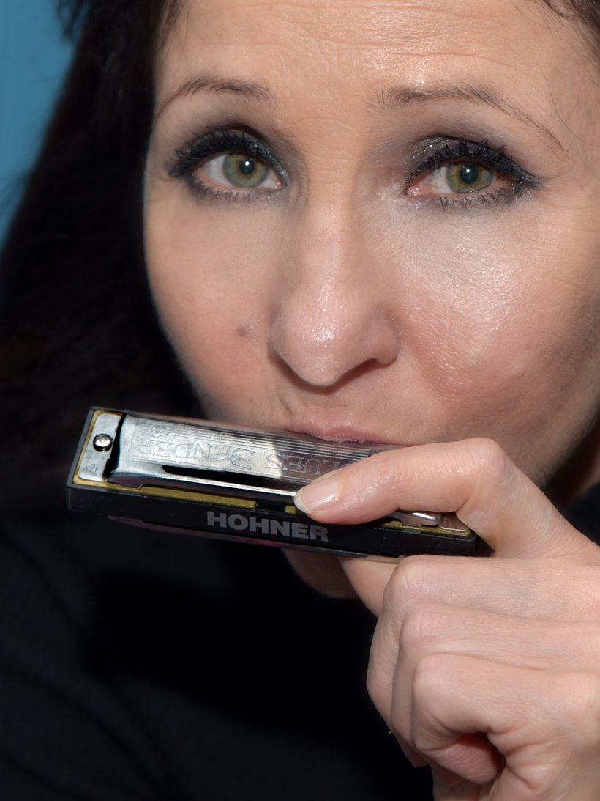
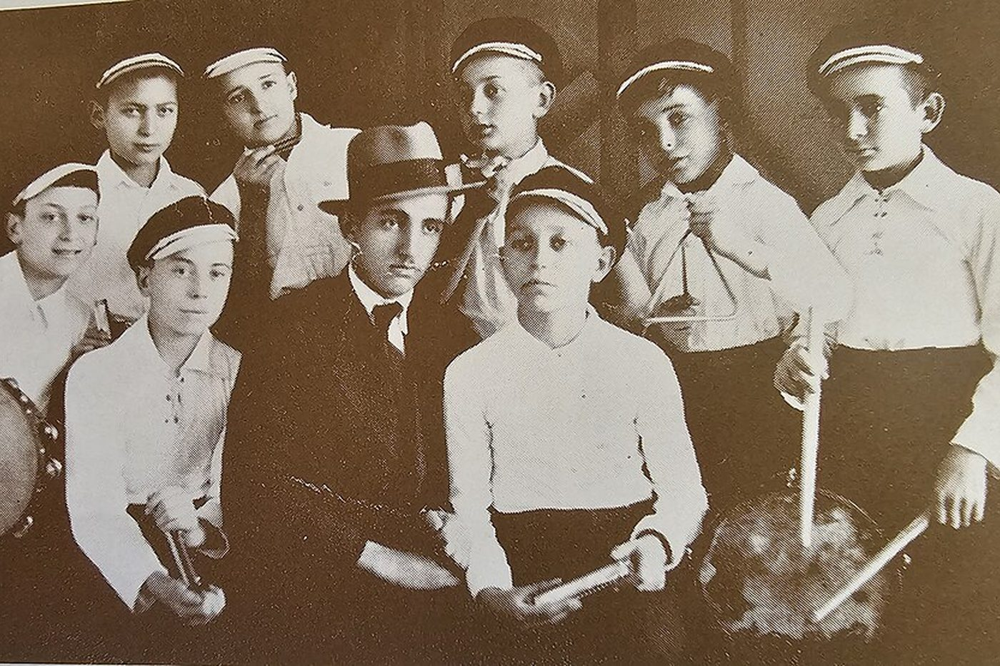

陈 屿
大三，汉语言文学。能在楼道里把一把十孔琴吹出电吉他的味道，最擅长把跑调的人重新拎回调上。
口琴大概是所有乐器里最不占地方的一种。巴掌大小，几十克重，揣进口袋就能出门——天桥上、操场边、回家的末班车上，随时都能拿出来吹一段。
它的学名就叫口琴，英文写作 harmonica，也有人叫它 mouth organ。1821 年，德国钟表匠克里斯蒂安·弗里德里希·路德维希·布什曼把一排长短不一的金属簧片装进一个木盒，靠气息推动簧片振动发声，最早的现代口琴就这样诞生了。此后两百年间，它随着移民与商船漂洋过海，十九世纪末从上海、天津的码头进入中国，又在八九十年代的校园、厂矿和绿皮火车上，成了无数人接触音乐的第一件乐器。
口琴社成立于 2013 年秋天。最初只有六个人，和一间每周三晚上才能借到的音乐教室 A305。那时没有教材，没有音响，六个人挤在一台旧钢琴旁边，用复音口琴把《送别》吹得七零八落。十三年过去，社团现在有 87 名在册社员、三个教学班、一支二十人的演出团，以及一整面墙的口琴——从二十四孔的复音琴，到十孔的蓝调口琴，再到十二孔四十八音的半音阶口琴，社里都有可以免费借用的教学用琴。
我们不设门槛。零基础班从「怎么握琴、怎么找到第一个音」讲起，每周三 19:00 在 A305 上课，四十分钟讲授、二十分钟自由练习；进阶班讲压音、超吹、舌堵与和弦伴奏，把单音的旋律吹成有层次的伴奏；演出团则在每学期第十四周的汇演前集中合排，从声部分配到舞台走位，一遍一遍把整首曲子磨齐。老社员带新社员，是我们最看重的一套办法——一个学期下来，你至少会有一位能随时回答「这个音为什么吹不响」的人。
三种琴各有脾气。复音口琴的每个音都由两片相差几音分的簧片同时发声，天然带着一层细密的颤音，适合《茉莉花》《山楂树》这样明亮悠长的旋律；十孔口琴音域窄、表现力野，一个压音就能从清亮滑到沙哑，是蓝调与摇滚的常客；半音阶口琴靠一个按键切换半音，能吹完整的十二平均律，古典改编曲与爵士标准曲都靠它。社团里三种琴都有人吹，也常常要在同一首曲子里互相让位——这是我们最喜欢的声音：粗糙的、带木头味的、不一致却又刚好合得上的合奏。
一年里我们会做很多事：九月迎新音乐会，在教学楼中庭搭一个最简单的台子；十月校园快闪，二十个人从图书馆前的台阶上突然开始吹《欢乐颂》；十一月社区义演，去长青社区给老人们吹他们年轻时的歌；四月校际交流日，请邻校的同学来音乐厅小剧场一起合奏；六月期末汇演「铜簧与木梳」，把一学期的曲目完整地吹一遍。没有一次演出是完美的，但每一次都有人从观众席走上来问：我可以加入吗。
我们招的不是「已经会吹口琴的人」，而是愿意在某个周三晚上把手机放进口袋、花一个小时和一群人把一段旋律吹整齐的人。你会乐理，很好；你完全不懂，也没关系。你会写文案、拍照、剪片子、做海报，那我们同样需要你——一场演出里，吹奏只是最后二十分钟，剩下的是排练、宣传和搬运谱架。
口琴的声音很像说话：吸气、呼气，都是旋律的一部分。我们相信音乐不必正式，也不必完美，它可以在任何一个下午被随手拿出来。欢迎你来 A305，听一次排练；或者干脆坐下，跟我们一起吹错第一个音。
2026 年春季学期，社团一共安排了十四周的活动：前两周是见面与入门，中间是分组训练、快闪排练与社区义演，最后两周集中合排，一路走向大礼堂的期末汇演。所有常规活动都在周三 19:00 开始，欢迎旁听，不需要提前报名。
| 口琴社 2026 年春季学期活动安排表 | |||
|---|---|---|---|
| 周 次 | 活动内容 | 地 点 | 负责人 |
| 第 1 周 3/02–3/06 |
新成员见面会 · 认识彼此与三把琴 | A305 音乐教室 （两场同一间教室） |
陈 屿 |
| 第 2 周 3/09–3/13 |
口琴基础教学公开课 · 单音与呼吸 | 苏 晚 | |
| 第 3–4 周 | 十孔口琴训练：压音、超吹与音阶 | A305 音乐教室 | 苏 晚 |
| 第 5 周 | 老带新分组排练：一声部 / 二声部 | B 栋 214 排练室 | 陈 屿 |
| 第 6–7 周 | 校园快闪排练 ·《欢乐颂》合练 | 图书馆前广场 | 林知远 |
| 第 8 周 | 社区敬老院义演「他们年轻时的歌」 | 长青社区礼堂 | 周雨桐 |
| 第 9–10 周 | 半音阶口琴进阶班（选修，需自带琴） | A305 音乐教室 | 苏 晚 |
| 第 11 周 | 校际口琴交流日 · 三校联合合奏 | 音乐厅小剧场 | 全体执委 |
| 第 12–13 周 | 期末汇演曲目合排 · 声部与走位 | A305 音乐教室 | 陈 屿 |
| 第 14 周 | 春季汇报演出「铜簧与木梳」 | 大学生活动中心 · 大礼堂 | 全体社员 |
| 备注：常规活动时间为每周三 19:00–21:00；A305 音乐教室须提前一天在教务系统借用，借用联系人陈屿。校外义演与交流日另行在社团群内通知，集合时间以通知为准。 | |||
表 1 口琴社 2026 年春季学期活动安排（共 14 周）
这些照片来自过去一年的排练与演出。点击任意一张，可以进入活动详情页，看一次快闪是怎么从一张排练表变成一个下午的。

没有舞台灯，就用两盏台灯；没有返听，就靠彼此的眼神。二十个人把《欢乐颂》吹得参差不齐，却把一整个中庭的人留到了最后。

老人们点的歌比我们的曲库还老。有人听到《莫斯科郊外的晚上》跟着哼，有人一直在问：这琴多少钱一把？
「铜簧与木梳」是我们给这场演出取的名字。铜是簧片，木是琴格，两样最便宜的材料，凑成了这个学期最后二十分钟的声音。
＊ 点击任意图片进入活动详情页 club_intro.html
五个人的名片，和一个关于第七把口琴的故事。故事里的名字都真实存在，只是有些细节被我们写慢了一点。
大三，汉语言文学。能在楼道里把一把十孔琴吹出电吉他的味道，最擅长把跑调的人重新拎回调上。
大四，音乐学。上课从不讲术语，只说「像哈气在玻璃上写字」，然后真的在窗上哈出一层雾。
大二，电气工程。负责谱架、音箱和所有「再等五分钟就好」的现场事故，快闪的点子多半出自他。
大三，视觉传达。海报、推文、节目单全出自她手，也是社里唯一一个能把和弦口琴抱稳的人。
入社第一节课连一个干净的单音都吹不出来，半年后站在第三排吹完了整首《送别》。下面这个故事是他写的。
文 / 顾迟（2025 级 零基础班）
顾迟第一次走进 A305，是九月第二个星期三。他原本以为口琴是世界上最简单的乐器：不用调弦，不用换把位，含住、吹气，声音就出来了。结果他含住琴，用尽全身力气吹了一口气，得到一个「呼——」的漏风声，像冬天没关严的窗。
那天来试听的有十几个人，坐满了教室前两排。苏晚让大家先不吹，只做一件事：把手放在肚子上，吸气三秒，吐气五秒。顾迟做得很好，他甚至有点得意——直到他把琴放到嘴边，吹出来的第一个音短促、扁平，像被谁掐断了尾巴。他不服气，又试，一次、两次、十次。嘴唇在铜格上磨出两道印子，声音还是那个漏风的「呼」。
苏晚走过来，没有说「用力一点」，而是让他把琴放低，看她示范。「别用腮帮子挤气，」她说，「气是从肚子里出来的。你试试对着窗玻璃写字——哈一口气，让玻璃上起一层雾，就那个感觉。」顾迟对着窗哈了一口气，玻璃上真的浮起一小片白。他再含住琴，气松下来，胸口不那么紧了，一个音终于跌跌撞撞地出来了：很轻，很短，但它是一个音，不是风。
他还是放弃了两个星期。第三次课他没来，理由写在群里：期中作业太多。第四次课他还是来了，坐在最后一排，没带琴，只带了耳朵。那天排练《送别》，二十个人里有一半在抢拍，二声部始终压不住一声部，但整间教室的声音是暖的。他跟着哼，哼着哼着，发现自己在找一个音——那个他上次吹响的音。
十月底的一个晚上，他留下来帮忙收谱架。教室里只剩他一个人，琴盒摆在讲台上，盖子没合严。他掀开，看见六把口琴整整齐齐地躺着，第七个位置是空的——不对，第七个位置上有一把很旧的复音口琴，木格被磨得发亮，边角还有一道裂。他拿起来，发现琴盒夹层里卡着一张对折的纸条，纸已经发黄。
「如果你正在为吹不响而生气，那就对了。我大一那年吹了两个月才吹出一个干净的音。第七把琴是我留下的，吹响它的人，明年替我站在台上。——2019 届 老周」
他把那张纸条读了三遍，然后在那间空教室里，把琴含住，吹到第十一次的时候，那个音终于干干净净地站住了。他没有告诉任何人。从那天起，他每天晚上在宿舍楼道里练，怕吵到人，就用一条毛巾蒙住琴；室友从最初抱怨「像有人在楼道里漏气」，到后来能听出他在练《小星星》。十二月的某个晚上，他第一次把《小星星》完整地吹下来，站在楼道尽头的窗边，风把窗帘吹起来，他忽然觉得，这大概就是所谓的「会了」。
冬天很冷，A305 的暖气总是不太灵。可是每周三晚上七点，那间教室一定会亮着灯，一定有人在调音、有人在抢谱架、有人在说「再来一遍，这次二声部小声一点」。十一月的社区义演，顾迟躲在最后一排，只吹最响的那几个长音；十二月开始学压音，压得头晕，苏晚说这是正常的，所有人都晕过。他慢慢发现，口琴这件事和聪明没有关系，只和你愿不愿意再吹一次有关系。
六月的汇演在大礼堂。灯光亮起来的时候，他站在第三排，手里握着的是那把第七把琴。前奏是他起的气口，他数着拍子，心里想起那张纸条上的字。整首《送别》四分半钟，他吹错了一个音，在第二段副歌；台下没有人听出来，除了他自己。散场后他把琴放回琴盒，把那张发黄的纸条取出来，换成一张新的，纸上写着同一句话：「吹响它的人，明年替我站在台上。」
现在，那把琴还在 A305 的琴盒里，第七个位置。如果你哪天来试听，也许会被分到它。它有点旧，木格上有一道裂，第三个孔需要多使一点气。但它能响。我们这儿很多人都是这样开始的：先是吹不响，然后是生气，然后是在某个没人的晚上，忽然吹出了第一个干净的音。
—— 所以，欢迎你来。A305，周三 19:00，我们留了一个位置，也留了一把琴。
填完这张表，我们会在三天内通过短信或邮件联系你，安排一次二十分钟的试听。不收费，也不需要自带乐器——社里有三十多把教学用琴可以借用。带 * 的为必填项。

口琴不挑场地，也不挑天赋。愿你在某个周三的晚上，把手机放进口袋，和我们一起把一小段旋律吹整齐。